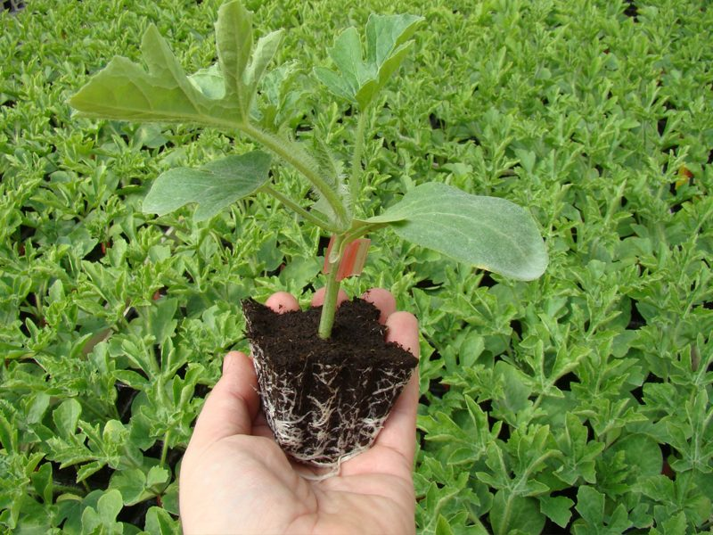

Control
El suelo no perdona un patrón débil
Los hongos y nematodos se acumulan en la tierra, campaña tras campaña, hasta que un día deciden por ti cuánto vas a cosechar. Elegimos cada patrón precisamente para que esa decisión siga siendo tuya.